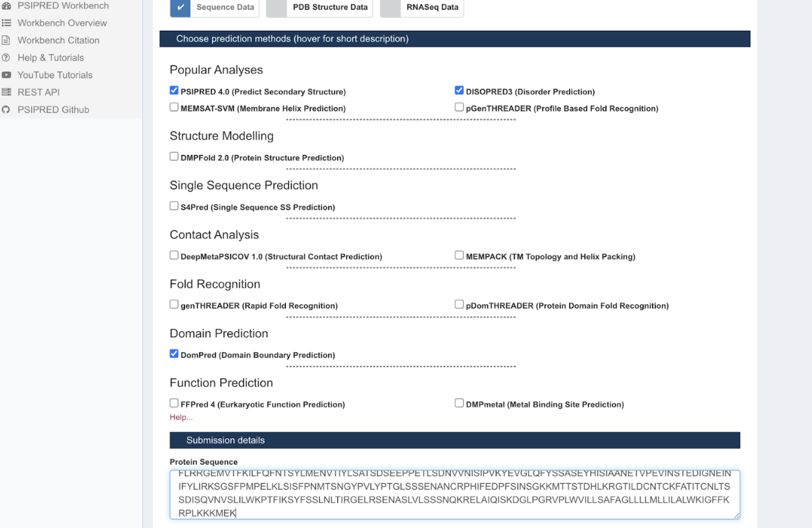
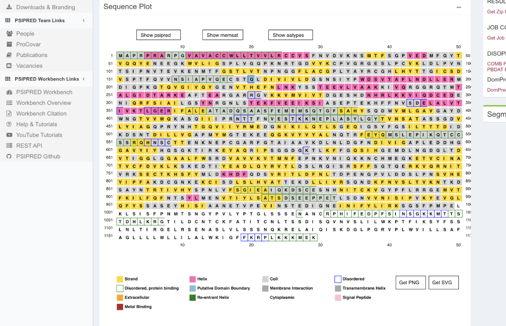
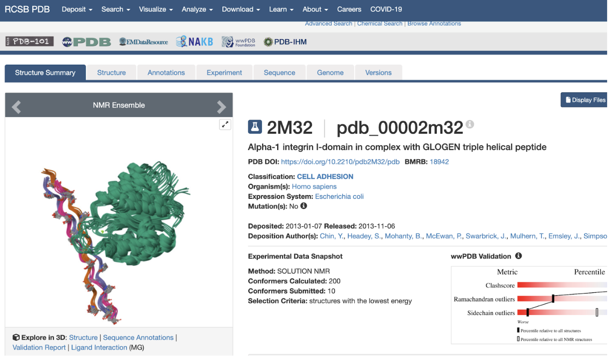
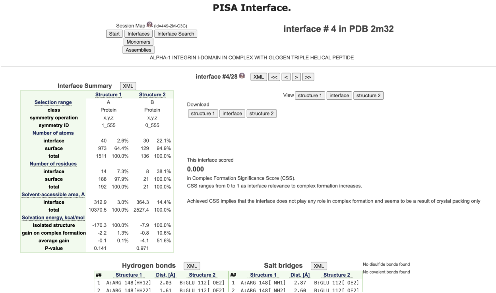

UniProt


Link to AlphaFold Results Page: View Structure
Used AlphaFold predicted structure — confidence scores were high and/or very high for selected amino acids.






cd /Users/inesnix/Downloads/foldx5_Mac_0 /bin/bash -c "$(curl -fsSL https://raw.githubusercontent.com/Homebrew/install/HEAD/install.sh)" brew install python@3.11
git clone https://github.com/ELELAB/mutatex.git python3.11 -m venv mutatex-env source mutatex-env/bin/activate
cd mutatex pip install --upgrade pip pip install biopython six pandas matplotlib scipy pyyaml openpyxl logomaker adjustText python setup.py install cd ..
chmod +x foldx_20270131 echo 'export FOLDX_BINARY=/Users/inesnix/Downloads/foldx5_Mac_0/foldx_20270131' >> ~/.zshrc source ~/.zshrc echo $FOLDX_BINARY
cp mutatex/tests/foldxsuite5/interaction_skip_repair/mutate_runfile_template.txt . cp mutatex/tests/foldxsuite5/interaction_skip_repair/interface_runfile_template.txt . cp mutatex/tests/foldxsuite5/interaction_nomultimers/repair_runfile_template.txt .
curl -O https://files.rcsb.org/download/2M32.pdb grep "^ATOM" 2M32.pdb | grep -v "HYP\|ACE\|NH2\| MG " > 2M32_clean.pdb
grep "^ATOM" 2M32_clean.pdb | awk '{print $5}' | sort -u
grep "^ATOM" 2M32_clean.pdb | awk '$5 == "A" && $3 == "CA" {print $6, $4}' | grep "^14 \|^17 \|^18 "
echo -e "NA14\nYA17\nPA18" > poslist.txt printf "G\nA\nV\nL\nI\nM\nF\nW\nP\nS\nT\nC\nY\nQ\nD\nE\nK\nR\nH" > mutlist.txt mutatex 2M32_clean.pdb \ -S \ -B \ -f suite5 \ -x ./foldx_20270131 \ -b ./mutatex/tests/foldxsuite5/basic_custom_rotabase/rotabase.txt \ -n 1 \ -p 4 \ -m mutlist.txt \ -q poslist.txt \ -v
ls results/interface_ddgs/final_averages/
cat results/interface_ddgs/final_averages/A-C/NA14 | awk 'NR>1 {aa[NR]=$1; val[NR]=$1} END {split("G A V L I M F W P S T C Y Q D E K R H", syms); split("Gly Ala Val Leu Ile Met Phe Trp Pro Ser Thr Cys Tyr Gln Asp Glu Lys Arg His", names); for(i=2;i<=NR;i++) {n=i-1; print syms[n], names[n], val[i]}}'
cat results/interface_ddgs/final_averages/A-C/YA17 | awk 'NR>1 {aa[NR]=$1; val[NR]=$1} END {split("G A V L I M F W P S T C Y Q D E K R H", syms); split("Gly Ala Val Leu Ile Met Phe Trp Pro Ser Thr Cys Tyr Gln Asp Glu Lys Arg His", names); for(i=2;i<=NR;i++) {n=i-1; print syms[n], names[n], val[i]}}'
cat results/interface_ddgs/final_averages/A-C/PA18 | awk 'NR>1 {aa[NR]=$1; val[NR]=$1} END {split("G A V L I M F W P S T C Y Q D E K R H", syms); split("Gly Ala Val Leu Ile Met Phe Trp Pro Ser Thr Cys Tyr Gln Asp Glu Lys Arg His", names); for(i=2;i<=NR;i++) {n=i-1; print syms[n], names[n], val[i]}}'
G Gly -0.77660 A Ala -0.79931 V Val 0.46602 L Leu -0.76641 I Ile -0.18853 M Met -0.56065 F Phe -1.71869 W Trp -1.20386 P Pro -0.38054 S Ser 0.49579 T Thr 2.08986 C Cys -0.47472 Y Tyr -2.21862 Q Gln 0.02286 D Asp 2.13224 E Glu 1.47580 K Lys -0.19313 R Arg -1.78019 H His -0.32747
G Gly 0.06040 A Ala 0.06506 V Val 0.04902 L Leu 0.04847 I Ile 0.03706 M Met 0.00961 F Phe 0.06086 W Trp 0.04298 P Pro 0.03880 S Ser 0.06339 T Thr -0.00614 C Cys 0.06573 Y Tyr 0.00001 Q Gln 0.05250 D Asp 0.16551 E Glu 0.12808 K Lys 0.04925 R Arg 0.04495 H His -0.01633
G Gly 0.00000 A Ala 0.00000 V Val 0.00000 L Leu -0.00001 I Ile 0.00000 M Met 0.00000 F Phe 0.00000 W Trp 0.00000 P Pro 0.00000 S Ser 0.00000 T Thr 0.00000 C Cys -0.00048 Y Tyr 0.00000 Q Gln 0.00129 D Asp 0.00037 E Glu 0.02346 K Lys -0.00101 R Arg -0.00739 H His 0.00000